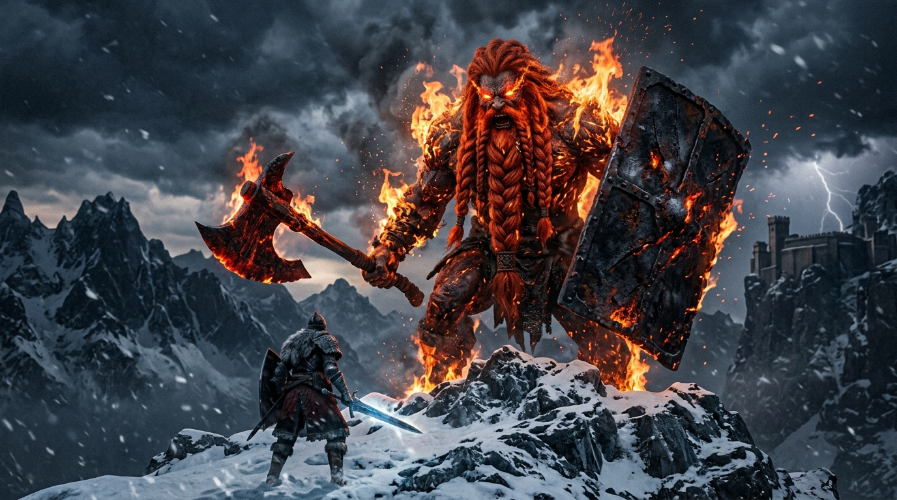

Chapter 3: The War of the Giants

Beyond the forbidden lands, where the air was thin and freezing needles of ice pierced through iron plate, lay the greatest threat to the Golden Order.
The Mountaintops of the Giants.
Upon these frozen summits burned the Flame of Ruin—a primeval fire nurtured in the belly of the Forge, capable of burning the divine wood of the Erdtree itself to cold ash. Queen Marika knew that so long as this flame burned unrestrained, her age of gold could never truly be eternal.
Godfrey marched north into the blizzard, his host now swelled by the armies of Leyndell, the swordstresses of the south, and the golden champions of the Erdtree.
The giants were colossi of red hair and living rock, their bodies scarred by faces of the Fell God. When they strode, avalanches swept down the mountain passes, crushing entire battalions beneath sheets of white death.
Yet Godfrey strode into the frozen hell with unyielding resolve.
The clash upon the peaks was a massacre of titans.
While the sorcerers of Zamor unleashed icy tempests and the Crucible Knights impaled the charging behemoths, Godfrey sought the chieftain of the Giants before the Great Forge.
The creature swung a metal platter the size of a palace gate, shattering the rocky precipice with a sound that reverberated across the continent. Magma erupted through cracks in the permafrost, melting glaciers into scalding torrents of steam.
Godfrey did not retreat. He leapt directly into the wall of heat.
With Serosh roaring in agony as the embers scorched his white mane, Godfrey slammed his broken axe into the giant's leg, severing tendons thick as ancient pine trees. As the colossus fell to its knees, Godfrey climbed the falling titan like a crag of stone, driving his weapon deep into the single burning eye upon its chest.
The red flame sputtered, and the giant collapsed with an earth-shattering tremor.
“Queen Marika deemed the flame could not be snuffed out. Thus, she placed a curse upon the lone surviving giant, condemning it to guard the forge for all eternity.”
Marika arrived at the peak as the embers smoldered in the snow. She looked upon the Forge of the Giants—and realized the terrible truth: the Flame of Ruin could never truly die.
With golden spells, she sealed the forge and bound the last weeping giant in chains of divine decree.
Godfrey stood beside her, his armor blackened by soot and his white hair streaked with blood. He looked out over the frozen peaks, and for the first time in his life as Elden Lord, he looked for the next enemy on the horizon.
There were none. The world had gone quiet.